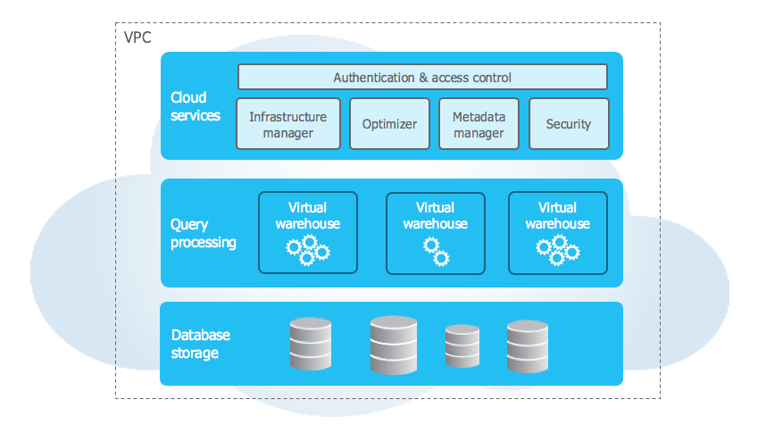
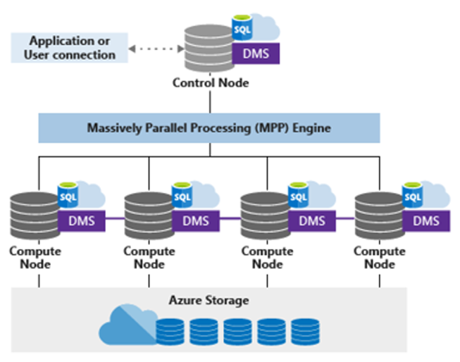
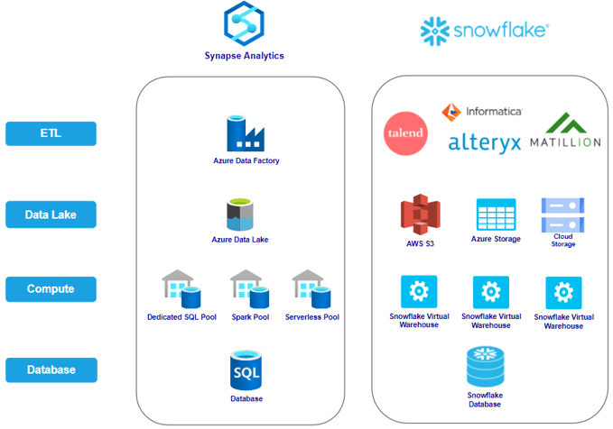
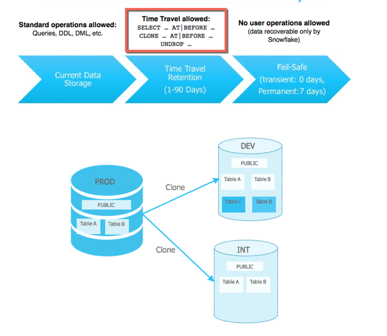
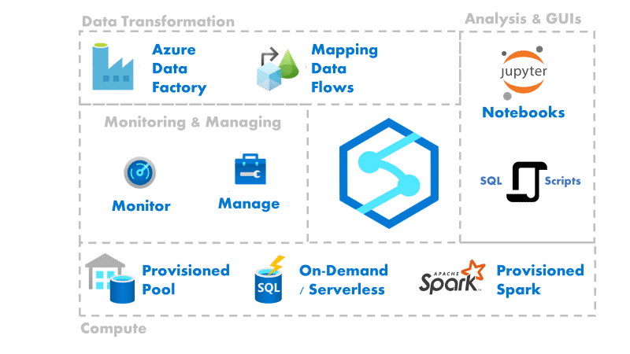
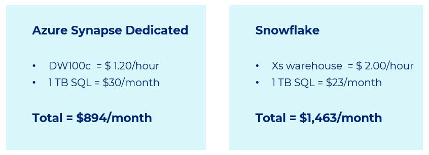
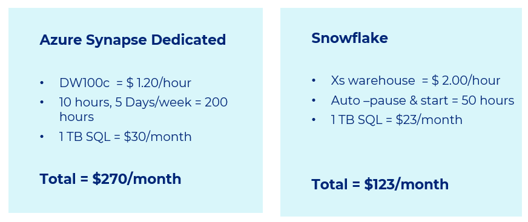
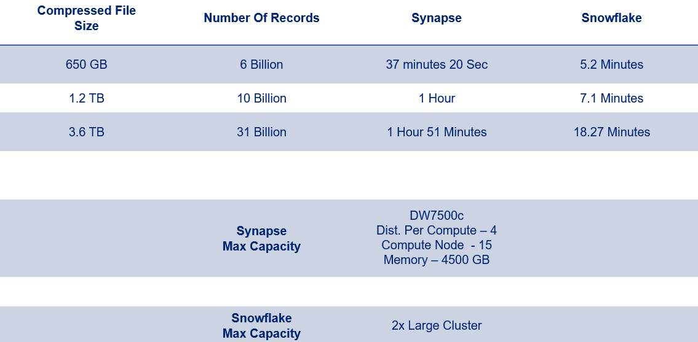
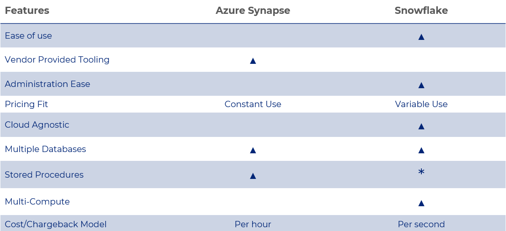

Snowflake Vs Azure Synapse Analytics: The Battle of Cloud Data Warehouses
Today, many enterprises are struggling with tremendous growth in data, and we need to understand why traditional systems are failing to cope with this. And over the next five years, global data creation is projected to grow to more than 180 Zettabytes.
Data-driven decisions are changing our work and life, be it the government or educational institutes, financial or healthcare organizations, data is being seen as a game-changer. So data is the new oil. We need to find it, extract it, refine it, distribute it and monetize it.
And data warehousing solution is another important aspect of these data-driven ecosystems. So, we need to build robust data solutions that can practically scale without a limit and handle the data variety like structure/semi-structured/unstructured, data coming in batches, or real-time streaming and store any volume/amount of data. And this is evident that our traditional data-warehousing systems can’t handle it.
This is one of the primary reasons why ‘Snowflake’, ‘Azure Synapse Analytics’, and similar cloud data warehousing offerings are gaining such popularity. And it’s often slightly hard to decide which one is more suitable in the given scenario.
With that in mind, Let’s try to analyze both offerings from an impartial lens.
What is Snowflake Data Cloud?
Developed in 2012, Snowflake is a fully managed SaaS (software as a service) that provides a single platform for data warehousing, data lakes, data engineering, data science, data application development, and secure sharing and consumption of real-time / shared data. Snowflake features out-of-the-box features like separation of storage and compute, on-the-fly scalable compute, data sharing, data cloning, and third-party tools support in order to handle the demanding needs of growing enterprises. Sources - snaplogic.com
What is Azure Synapse Analytics?
Azure Synapse Analytics is a limitless analytics service that brings together data integration, enterprise data warehousing, and big data analytics. It gives you the freedom to query data on your terms, using either serverless or dedicated options — at scale. Azure Synapse brings these worlds together with a unified experience to ingest, explore, prepare, transform, manage, and serve data for immediate BI and machine learning needs. Sources -azure.microsoft.com
Snowflake Architecture
Snowflake’s architecture is a hybrid of traditional shared-disk and shared-nothing database architectures. Similar to shared-disk architectures, Snowflake uses a central data repository for persisted data that is accessible from all compute nodes in the platform. But similar to shared-nothing architectures, Snowflake processes queries using MPP (massively parallel processing) compute clusters where each node in the cluster stores a portion of the entire data set locally. This approach offers the data management simplicity of a shared-disk architecture, but with the performance and scale-out benefits of a shared-nothing architecture. Sources — snowflake.com
Key highlights of Snowflake architecture…
- Compute is fully isolated from snowflake database/storage
- Multiple compute can assess the same database simultaneously
- The same compute/virtual warehouse can access multiple databases simultaneously
- Manual scale up/down
- Auto scale in/out, stop resume
The below diagram depicts Snowflake compute architecture…

Image Credits — snowflake.com
Azure Synapse Architecture
Synapse SQL leverages a scale out architecture to distribute computational processing of data across multiple nodes. Compute is separate from storage, which enables you to scale compute independently of the data in your system. Sources — azure.microsoft.com
Key highlights of Azure Synapse architecture…
- A dedicated SQL Pool aligns with a single SQL Database
- The database can only be accessed when a dedicated SQL pool is running
- Massive Parallel processing
- Workload groups and classifiers are to isolate and prioritize actions
- Manual /API scale, stop, resume
The below diagram depicts Azure Synapse compute architecture…

Image Credits — azure.microsoft.com
Platform Architecture Comparison
The below diagram depicts the platform ecosystem comparison for Snowflake & Azure Synapse…

Snowflake Specific Features
- Zero copy data cloning & Data Sharing
- Share data securely and easily with partners
- Time Travel Query (90 Days back in history) & Less Administration
- Robust Web Interface for compute/virtual warehouse & database components
- Tools like DataGrip can be used for creating a dev environment
- Snowflake has an abstraction layer between the actual cloud resources
- Run the same snowflake software on multi-clouds — Azure, AWS & GCP
- Managed at Snowflake.com, login to the tenant is tied to a specific cloud.
- Capacity is charged for how long it runs & selected performance level.
The below diagram depicts the Snowflake-specific features…

Image Credits — snowflake.com
Azure Synapse Specific Features
- A Collection of Azure resources like Azure Data Lake, Azure SQL Server, Azure Data Factory
- Crafted & maintained in Azure
- Integrated Web Interface View
- Apache Spark Pools
- Prep Data and build ML model using the notebook in the web dev environment
The below diagram depicts the Azure Synapse-specific features…

Image Credits — azure.microsoft.com
Constant Usage Pricing Comparison
Constant Use Pricing for lowest compute capacity and 1 TB database running 24x7 for 30 days (ignoring ETL, file storage, and data transfer)
The below diagram depicts this scenario…

Variable Usage Pricing Comparison
Variable Use Pricing for lowest compute capacity and 1 TB database running a business hour for 4 weeks (ignoring ETL, file storage, and data transfer)
The below diagram depicts this scenario…

Snowflake Limitations
- Depending on the use case, Snowflake can be slightly more expensive than competitors.
- Snowflake misses out on the benefits of a more tightly integrated cloud ecosystem.
- Snowflake limits the size of query text submitted through Snowflake clients to 1 MB per statement.
- No on-premise Snowflake offering
Azure Synapse Limitations
- Heterogeneous Workload — Can’t assign individual compute machines to each group
- Concurrent session management — Workload isolation
- Don’t have a fixed data loading time & Data load time is a little high
- Pause and resume operations takes 3–8 mins depending on DWUs
- Pause operations will terminate the existing connections
- Need SAW machine to connect, having connectivity issues
- Data sharing capabilities using Azure Data Share
- Data backup — Restore the entire DB and copy the data
- Costing Synapse — per hour basis
Data Loading Time Comparison
The below diagram depicts the data loading time comparison for Snowflake & Azure Synapse…

Comparison Highlights
The below diagram depicts the feature-level comparison for Snowflake & Azure Synapse…

Conclusion
Choosing the right data warehousing solution is a crucial part of Enterprise data strategy formulation. When considering which data warehouse to use, it is critical to evaluate your use case and understand its data & integration gravity.
Snowflake performs well, integrates with a wide range of tools, includes easy administration, and has varying compute capacity options. On the other hand, Synapse performs well, has easy integration with the Azure ecosystem, and offers a more diverse experience for data processing and database type. Another critical factor is to analyze the platform usage pattern, where Azure synapse shines with constant usage pattern while Snowflake is a better fit variable usage patterns. Snowflake also gives the flexibility to choose a virtual warehouse with varying compute capacity to different user persona.
For an Azure-only environment, choosing Synapse is a no-brainer. All services integrate natively, good performance, and integrated IDE for data pipeline, spark processing & Azure ML/AI. On the other hand, Snowflake is a strong competitor with the cloud-agnostic feature, flexible compute, time travel, variable usage pattern, zero-copy data cloning, zero administration, and performance.
Do let me know what you think about the Snowflake vs Azure Synapse comparison…
Thanks for reading !!!